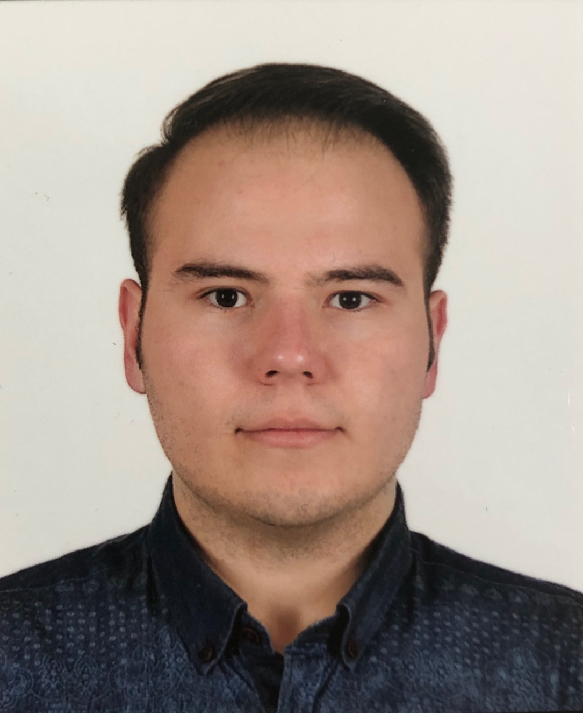

M. Furkan Ilaslan
CV • Research • Portfolio
About
Publications
Projects
Experience
Service
Skills
Toggle theme
Muhammet Furkan Ilaslan
Quick Summary
Highlights
Place
furkan-photo.jpg
in the repo root.
';">
📄
Download CV
(PDF)
Tip: keep
index.html
,
FurkanCV.pdf
, and
furkan-photo.jpg
in the repo root for GitHub Pages.
About
Publications
All
Journal
Conference/Workshop
Preprint/Under Review
Sort: Year (new → old)
Sort: Year (old → new)
Sort: Title (A → Z)
Selected Projects
Sort: Recent first
Sort: Title
Work & Research Experience
Education
Leadership, Service & Reviewing
Leadership / Service
Reviewer
Skills
Technical
Soft Skills & Hobbies
Awards & Certifications
Awards / Achievements
Certifications